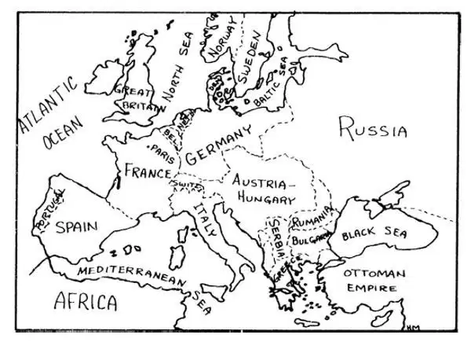
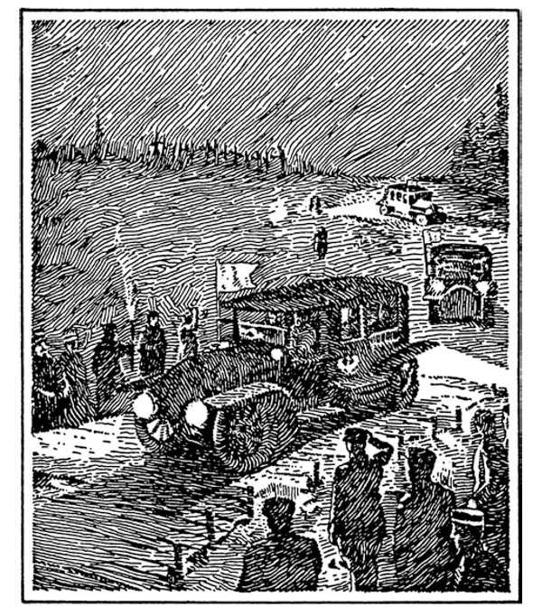
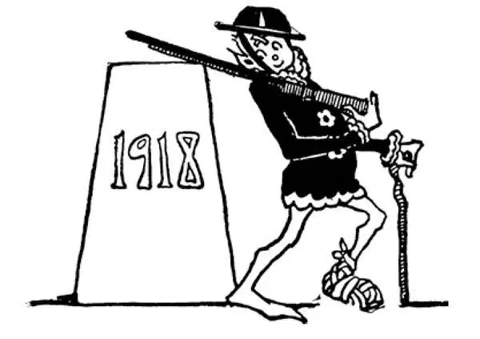

84
A World at War
陷入战争的世界

Now, I must tell you about a fight so big that the world was at war.
There was a little country in Europe called Serbia. It was next door to the big country of Austria. But though little Serbia and big Austria were next-door neighbors, they were not good neighbors. Each was always saying mean things about the other. This was because Austria ruled over several other kinds of people besides Austrians, and some of these people were related to the Serbians. The Serbians used to say that Austria treated these people unfairly. But the Serbians did more than say things. They formed secret societies to send people into Austria to stir up trouble. Austria said that Serbia was trying to break up the kingdom of Austria by making the people discontented and unwilling to be ruled by Austria.
Then a young man who lived in Serbia shot an Austrian prince, the prince who was to have been the next king of Austria.
Of course Austria was furious and blamed Serbia. The Serbs said they were very sorry but they had nothing to do with the death of the prince. However, Austria wouldn't accept Serbia's apology. Austria thought the time had come to punish Serbia for all the trouble Austria was having. In spite of everything the other countries in Europe could do to stop this, Austria declared war on Serbia.
The trouble started to spread just like fire in a field of grass. Russia took the side of Serbia and ordered its army to get ready to fight. Germany took the side of Austria. Ever since the time of the Franco-Prussian War and Bismarck and William, the big countries of Europe had been training for a fight. Nearly all these countries had been getting together in two groups, one made up of the friends of Germany; the other, friends of France.
Russia was a friend of France and so when Russia got ready to fight, France ordered its armies to get ready to help Russia. That meant Germany would be between two big enemies, France on one side and Russia on the other. Germany decided to strike quickly and destroy France before Russia could hit hard from the other side.
To get at France quickly, Germany had to go through the little country of Belgium. Germany and France had agreed that neither would march armies through Belgium but when the war began German armies marched in anyway and pushed aside the Belgians, who tried to stop them. Germany's armies rushed on toward the capital of France, Paris. They got as far as a river called the Marne, only twenty miles from Paris. There, the French under General Joffre stopped the German army. This battle of the Marne is probably one of the most famous of all the battles you have heard about so far in this history, for though the war went on for four years after this battle, if the Germans had won at the Marne, they would have captured Paris and probably made France a German country.
By this time, England had come into the war on the side of France and Belgium and Russia. England had the strongest navy in the world. The German navy wasn't strong enough to beat the English navy, so Germany kept its battleships at home. Germany had to fight from under the sea with submarines, which were hard for the English ships to catch. It was the first war in history in which battles were fought not only on land and on sea but up in the air and down under the water.

Europe in 1914 （1914年的欧洲）
The German submarines sometimes sank ships belonging to countries that weren't in the war. That, of course, made these countries very angry with Germany, and so before the war was over, almost all the countries of the world were in the fight. That is why we call it a World War. Later there was another World War, so we call this World War I just as we call a king George I so as not to confuse him with George II.
Millions of people had been killed, millions of soldiers had been wounded, billions of dollars had been spent, and still the war went on, with neither side able to win. All of a sudden Russia had a revolution. Russia was so poor that some of its soldiers received no ammunition and no medical supplies. The Russian people killed their ruler, the czar, and his family, and refused to fight any longer. Things began to look pretty bad for the Allies.
The United States did not enter the war until 1917, almost three years after it had begun; it did so after German submarines began sinking American ships and killing Americans.

Surrender of Germans （德国人投降）
America was so far off—three thousand miles away and across an ocean— that it seemed impossible that we could do much in the war. However, in a very short time, the United States had sent two million soldiers across in ships. Under General Pershing they fought great battles.
At last, Germany and its friends surrendered and on November 11, 1918, Germany signed a paper agreeing to do everything the Allies asked. The first World War in history was ended. The kaiser went to live in Holland, and Germany became a republic. Big Austria became little Austria, for all its lands and many of its people were taken away and made into independent countries. Little Serbia disappeared altogether. In its place was formed the new country of Yugoslavia, which included Serbia and several other small states.
【中文阅读】
现在，我必须给你讲一讲一场大规模的战争，它让全世界都陷入其中。
欧洲有个小国叫塞尔维亚。它是大国奥地利的邻国。可是尽管小塞尔维亚和大奥地利是隔壁邻居，但并不是好邻居。彼此总是说对方的坏话。这是因为奥地利除了统治奥地利人以外，还统治着其他一些民族，其中有些人与塞尔维亚人有亲属关系。塞尔维亚人过去常说奥地利对这些人不公平。但是塞尔维亚人不仅仅是口头“说说”。他们组织了一些秘密社团，派人进入奥地利去挑起骚动。奥地利说塞尔维亚企图煽动人们的不满情绪，让他们反抗奥地利统治，以此来分裂奥地利王国。
这时，一个住在塞尔维亚的年轻人用枪刺杀了一位奥地利王子，这位王子本来是要成为奥地利下一任国王的。
奥地利当然怒不可遏，并责怪塞尔维亚是罪魁祸首。塞尔维亚人说他们感到非常抱歉但是他们与王子的死毫无关系。可是，奥地利无法接受塞尔维亚的道歉。奥地利认为惩罚塞尔维亚的时机到了，要让塞尔维亚为他们给奥地利造成的所有这些麻烦付出代价了。尽管欧洲其他国家竭力阻止奥地利这么做，但是奥地利还是对塞尔维亚宣战了。
骚动开始蔓延，就像牧场草地上的火苗一样。俄国支持塞尔维亚，命令自己的军队准备出战。德国支持奥地利。自从普法战争和俾斯麦及威廉一世全盛时期以来，欧洲各个大国就一直在为打仗训练军队。几乎所有这些国家分别形成两大阵营，一个阵营由德国的友邦组成，另一个阵营是法国的友邦。
俄国是法国的盟友，所以当俄国准备出战时，法国命令自己的军队做好准备支援俄国。那就意味着德国处于两大敌人之间，一边是法国，另一边是俄国。德国决定趁俄国还没有从另一边打出重拳，就迅速出击摧毁法国。
要迅速赶到法国，德国必须穿过小国比利时。德国和法国曾经达成协议，双方均不能行军穿过比利时，但是在战争开始后，德国军队还是不遵守协议进入比利时，把试图阻止他们的比利时人推开。德国军队直扑法国首都巴黎，他们最远到达了马恩河，离巴黎只有20英里了。正是在这个地方，法国人在霞飞将军的指挥下挡住了德国军队。马恩河战役可能是你到目前听说过的最著名的战役之一，因为尽管这场战役之后战争又持续了四年，但是如果在马恩河德国打赢了，他们就会攻下巴黎，还可能把法国纳入德国的版图。
到此时，英国也加入了战争，支持法国、比利时和俄国这一方。英国有世界上最强大的海军。德国海军还不够强大，无法和英国海军抗衡，所以德国把战舰都留在了国内。德国只得用潜水艇从水下出击，英国军舰很难拦截到潜水艇。在这次战争中，战役不仅在陆地和海上进行，而且还在空中和水下，这在历史上还是第一次。
有时德国潜水艇击沉了非参战国的船只。那当然让这些国家对德国非常气愤，所以在战争结束之前，世界上几乎所有的国家都卷入了战争。那就是为什么我们称 它为一次世界大战。后来又发生了一次世界大战，所以我们把这次世界大战称为第一次世界大战，就像我们把一个国王称为乔治一世，只为了避免把他和乔治二世混淆了。
在这场战争中，千千万万人死去，千千万万士兵受伤，无数金钱被耗费，可是战争仍在继续，哪一方都不能获胜。突然俄国爆发了一场革命。俄国太穷困了，有些士兵根本收不到弹药，也得不到任何医疗供给。俄国人杀掉了他们的统治者沙皇和他的一家，拒绝再打下去。局势对协约国来说看起来很糟糕。
直到1917年美国才加入战争，那时战争打了差不多有三年；美国是在德国潜水艇开始击沉美国船只、杀害美国人之后，才参战的。
美国离战场很遥远——3000英里以外，还隔着一片大洋——似乎不可能在战争中有多大作为。但是，在很短的时间内，美国用船只运送两百万名士兵横渡大西洋。他们在潘兴将军的率领下打了许多大的战役。
最后，德国和它的盟国投降了，1918年11月11日，德国签订了一份协议，同意协约国提出的所有要求。历史上的第一次世界大战就此结束了。德国皇帝移居荷兰，德国成为了共和国。大奥地利变成了小奥地利，因为它原有的土地和许多人民都被分裂出来，成了一个个独立的国家。小塞尔维亚完全消失了。取而代之的是一个新建立的国家南斯拉夫，南斯拉夫包括了塞尔维亚和其他一些小邦国。
